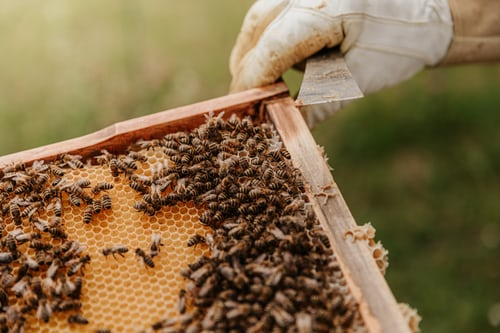
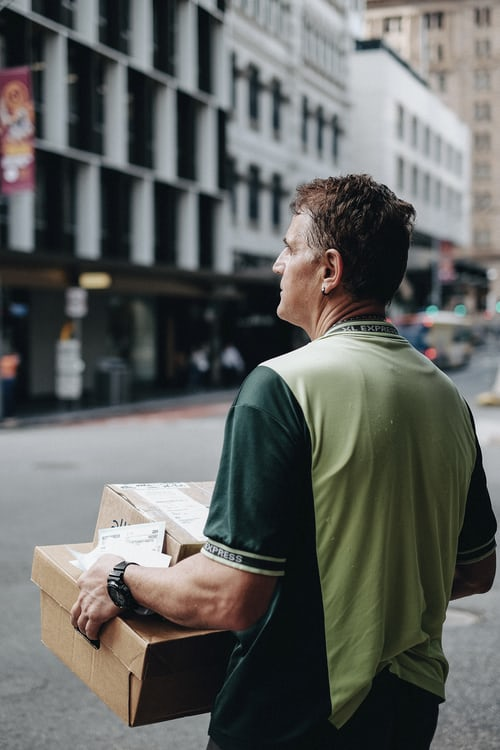
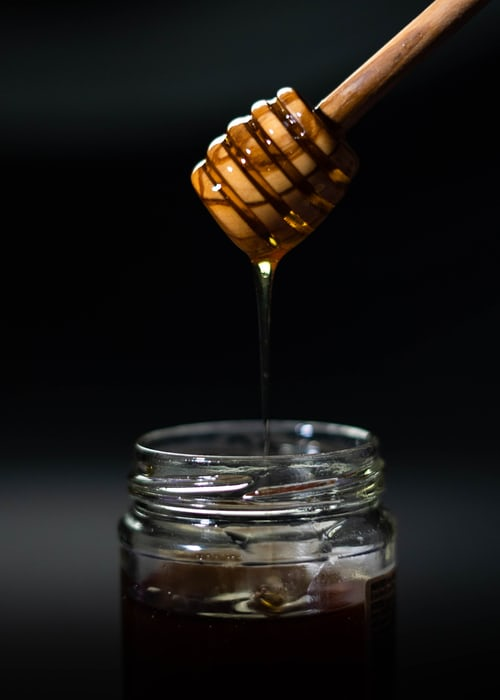

Our Legacy
Milk and honey were taken over in 2016 by Honey and Mr. Honey, men have been driving since the summer of 2020 only by Mr Honey. We at Milk and Sweetheart always have the customer in the greatest focus and work hard to provide a personal service, where we get the chance to inspire and help our customers according to their needs. It is with great love and passion that we hand-pick our collections and a carefully selected range from leading brands.

It all started as a small shop providing quality skincare products in refilled bottles and with the belief that business could be a force for good and the world - our source of beauty. Since then The BEE Company (STICKY) has become a global retail business serving over 30 million customers worldwide, employs 10,000 people with a further 12,000 in our franchise team, and operates in around 3,000 stores in more than 70 countries. We have exported innovative products, campaigns that matter and an ethical approach to business all over the globe.

We couldn’t have done any of this without our inspirational people and their commercial instincts. Bees are highly adaptable and could survive in all corners of the world if only flowers were available. That is why bees have existed on our earth for millions of years even before human times. Beekeeping is something we humans have been doing for a long time. Bees are probably man's oldest domestic animals, and evidence of this in the form of honey and bees, we have found both in the tombs of the pharaohs in Egypt and in cave paintings around the world. Honey has been used as a natural medicine, for its antibacterial properties and healing power. Today we have about 100 bee communities in our apiaries. Our plan is to gradually increase the number of communities. The bee variety we work with is called Buckfast and originates from southwest England. We raise our own queens to gain better control over our bee colonies. It gives productive queens with good qualities, which gives us a good harvest of honey.

Sign up